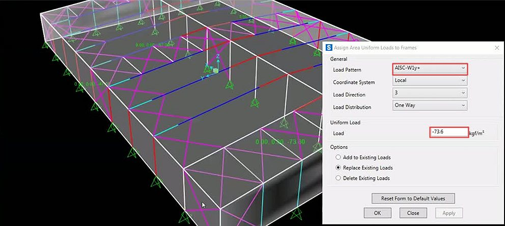

Bài 9.6. Thực hành SAP2000 Wind load cases in SAP2000
Tải gió ASCE được nhập vào SAP2000 dưới dạng 8 trường hợp tải, gán qua các tấm Area không khối lượng để tải luôn vuông góc bề mặt.
- Lập đủ 8 trường hợp W1X±, W2X±, W1Y±, W2Y± và hiểu quy ước tên.
- Gán áp lực vùng bằng Uniform to Frame (Shell) theo Local 3 và kiểm tra lại bằng hiển thị tải.
1. Tình huống
Mô hình nhà máy DNP có 6 khung, hai khung đầu hồi và hai khung thứ hai nằm trong vùng biên. Mỗi khung có 4 vùng áp lực cho mỗi trường hợp gió ngang. Gán bằng tay từng thanh rất dễ sai dấu; cách dùng tấm Area giúp nhập áp lực một lần cho cả mặt.
2. Nội dung chính
| Trường hợp | Hướng gió | $GC_{pi}$ |
|---|---|---|
| W1X+ / W1X− | Ngang nhà, theo chiều +X / −X | $+0{,}18$ |
| W2X+ / W2X− | Ngang nhà, theo chiều +X / −X | $-0{,}18$ |
| W1Y+ / W1Y− | Dọc nhà, theo chiều +Y / −Y | $+0{,}18$ |
| W2Y+ / W2Y− | Dọc nhà, theo chiều +Y / −Y | $-0{,}18$ |
Bảng 9.7. Tám trường hợp tải gió trong SAP2000
3. Thực hành SAP2000
Thực hành trên SAP2000
- Define → Load Patterns: tạo 8 trường hợp loại Wind, Auto Lateral Load = None: W1X+, W1X−, W2X+, W2X−, W1Y+, W1Y−, W2Y+, W2Y−. Quy ước: W1 là áp lực trong dương (+i), W2 là áp lực trong âm (−i); dấu +/− chỉ chiều gió theo trục tọa độ.
- Cách gán tải (như mô hình GV): vẽ các tấm Area (khối lượng 0) phủ tường và mái, sau đó Assign → Area Loads → Uniform to Frame (Shell), phương Local 3, kiểu phân phối One Way. Giá trị nhập là $p$ (kG/m²) của từng vùng.
- Kiểm tra: Display → Show Load Assigns → Area. Mũi tên phải vuông góc bề mặt; mái đón gió và khuất gió đều bị hút ra.
- Lặp lại cho vùng biên (khung đầu hồi và khung thứ hai, nằm trong phạm vi $2a$).
[Hình chụp hộp thoại SAP2000 sẽ bổ sung từ video Buổi 12 và thao tác trên mô hình NM DNP.]
- Select
- chọn tấm bao che
- Assign
- Area Loads
- Uniform to Frame (Shell)
- Load Pattern, Direction = 3 (Local), One Way
- Load

4. Lỗi thường gặp
Lỗi thường gặp
- Dùng $q_z$ theo từng độ cao như TCVN thay vì $q_h$ chung cho mọi mặt.
- Quên trường hợp áp lực trong âm hoặc dương, nên chỉ có 4 thay vì 8 trường hợp gió.
- Nhầm dạng địa hình B/C giữa TCVN và ASCE.
- Dùng $V$ ứng với chu kỳ lặp 20 năm (vận tốc của QCVN) mà không quy đổi.
- Gán tải theo Global Z cho mái dốc, trong khi phải gán vuông góc bề mặt (Local 3).
5. Luyện tập
Nhà kín, xét gió theo hai phương X, Y, mỗi phương hai chiều. Cần khai báo bao nhiêu trường hợp tải gió trong SAP2000?
Gợi ý
Mỗi hướng gió có hai trường hợp áp lực trong.
Lời giải
2 phương × 2 chiều × 2 trường hợp $GC_{pi}$ = 8 trường hợp.
Gán áp lực gió lên tấm Area phủ mái dốc bằng Uniform to Frame (Shell). Chọn phương tải nào?
Gợi ý
Áp lực gió luôn vuông góc bề mặt.
Lời giải
Local 3 là pháp tuyến của tấm; Global Z bỏ sót thành phần ngang của áp lực trên mái dốc.
Nhà xưởng Hòa Bình: $q_h = 108{,}4$ daN/m², $\theta = 4{,}0°$, nhà kín. Tính giá trị $p$ nhập cho tấm tường đón gió (vùng 1) trong trường hợp W2X ($-GC_{pi}$).
Gợi ý
$\theta < 5°$ → hàng 0–5° của Bảng 9.4: vùng 1 $GC_{pf} = 0{,}40$.
Lời giải
$p = 108{,}4\,(0{,}40 + 0{,}18) = 108{,}4 \times 0{,}58 = 62{,}9$ daN/m² (đẩy vào tường).
- 8 trường hợp gió: W1 = $+GC_{pi}$, W2 = $-GC_{pi}$; dấu ± là chiều gió theo trục tọa độ.
- Gán bằng tấm Area khối lượng 0, Uniform to Frame (Shell), Local 3, One Way; khung trong vùng $2a$ dùng hệ số 1E–4E.